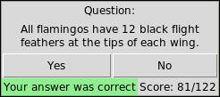
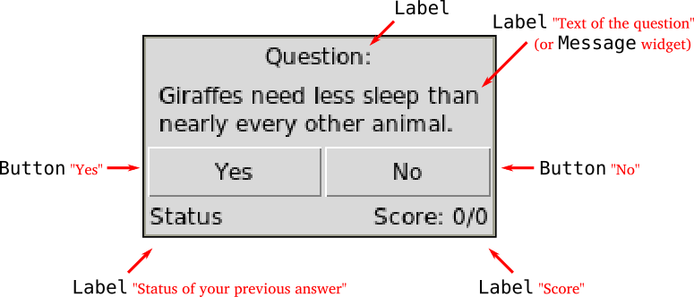
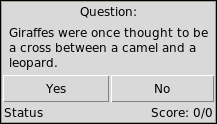
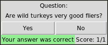
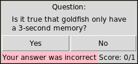

This assignment is due March 29th at 11:59 PM. Submit your solution on BrightSpace, under the “Unit 8” assignment.
Please copy your code into the text box, making sure to indent it properly with whitespace so that it appears the same as in IDLE or wherever you wrote the code. This will make it easier for me to grade.
You can submit multiple times. I will only grade your last submission.
Data
This assignment uses two files:
The text file animals.txt, which you can open by clicking here: animals.txt
The Python file readquiz.py, which you can open by clicking here: readquiz.py
Instructions
Task
In this task, we are going to write a program that implements a graphical quiz game.
Quiz screenshot
You are provided with a text file containing quiz questions animals.txt (source) and a module readquiz.py with a function loadQuestions() able to read Yes/No questions from the questions file. The function returns a list of the form:
[
['All dogs, cats and birds are colorblind.', False],
['Snake skin is covered in scales.', True],
['All tigers have stripes.', False],
...
]
Each element of the list is a pair containing a trivia-style statement string and a True/False value that determines whether the statement is true or not.
Step by step
Load questions from the file animals.txt using the module readquiz.py
You will need at least three global variables: the list of questions, the number of times the player answered, and how many times they were correct:
questions = readquiz.loadQuestions()
total = 0
correct = 0
Create a Tkinter interface, arranging widgets as close as possible to the following layout (you may use additional Frame widgets to help arrange buttons and labels):
Tkinter interface, with elements labeled in red and monospace text
When creating a label for the quiz question, you may use a Message widget instead of Label to get a multi-line text label. They are created the same way, but for Message you additionally specify its width:
questionLabel = Label(root)
questionLabel = Message(root, width=200)
The difference between Label and Message:
Label with long text
Message with long text (note how it gets wrapped)
The Status label in the bottom left is supposed to show if the player’s previous answer was correct or incorrect
The Score label in bottom right is supposed to show the ratio of correct answers (i.e. Score: correct/total, initially, it should show Score: 0/0).
The game should show a randomly sampled trivia statement from the list and allow the player to press a button “Yes” or “No” if they agree or disagree with the statement.
To make the game work, add ['command'] functions for the buttons. If a correct button is pressed, it should change the Status label to 'Your answer was correct' and its background to 'light green', otherwise change it to 'Your answer was incorrect' and its background to 'pink'. After that, it should load a new question, update globals correct and total, and update the Score label to show the updated ratio.
Screenshot of quiz window after single correct answer
Screenshot of quiz window after single incorrect answer
After playing many rounds:
Screenshot of quiz window after many questions answered, with most recent one being correctly answeredScreenshot of quiz window after many questions answered, with most recent one being incorrectly answered
Notes
This assignment is harder than previous assignments. It’s okay if you don’t finish the whole thing, but please at least get the window to pop up and display some question-related information, otherwise I can’t give you full credit.
If you are having trouble with the assignment, either ask questions during class (preferred) or come to office hours.
There are many ways to make the buttons work correctly. We can give you one possible solution strategy:
Define two functions for the buttons, describing what should happen when the player presses the correct button, and the incorrect one:
def goodAnswer(): correct +=1 total +=1## Update Status and Score labels accordingly getNewQuestion()def badAnswer(): correct +=0 total +=1## Update Status and Score labels accordingly getNewQuestion()
The function getNewQuestion() should sample a new question, update the question label, and then reassign the ['command'] functions of the buttons. For example, if the question statement is False, then the Yes button should now execute badAnswer, and the No button should now execute goodAnswer.
So in the proposed solution strategy, each time we update the question, we also update the behavior of the buttons.
You should be able to do all of the tasks with only the Python topics we covered in class so far.
If you want to use more complex functionality than what we discussed in class, the Python documentation may be helpful: Python 3.10 documentation